컴퓨터활용능력-1급 (2017-03-04 기출문제)
1과목: 컴퓨터 일반
1. 다음 중 멀티미디어의 동영상에 관련된 설명으로 옳지 않은 것은?
- 국제표준화단체인 MPEG에서는 다양한 규격의 압축 포맷과 부가 표준을 만들었다.
- 비디오 스트리밍은 인터넷에서 영상파일을 다운로드 하면서 실시간 재생하는 기법이다.
- MIDI는 애플사에서 개발한 동영상 압축 기술로 시퀀싱 작업을 통해 작성된다.
- AVI는 Windows에서 기본적으로 지원하는 표준 동영상 파일 형식으로 별도의 하드웨어 장치 없이 재생 가능하다.
(정답률: 82%)

2. 다음 중 멀티미디어 그래픽과 관련하여 렌더링(Rendering) 기법에 대한 설명으로 옳은 것은?
- 제한된 색상을 조합하여 새로운 색을 만드는 기술이다.
- 2개의 이미지를 부드럽게 연결하여 변환하는 기술이다.
- 3차원 그래픽에서 화면에 그린 물체의 모형에 명암과 색상을 입혀 사실감을 더해주는 기술이다.
- 그림의 경계선을 부드럽게 처리해주는 필터링 기술이다.
(정답률: 88%)
3. 다음 중 컴퓨터 보안 기법의 하나인 방화벽에 관한 설명으로 옳지 않은 것은?
- 전자 메일 바이러스나 온라인 피싱 등을 방지할 수 있다.
- 해킹 등에 의한 외부로의 정보 유출을 막기 위해 사용 하는 보안 기법이다.
- 외부 침입자의 역추적 기능이 있다.
- 내부의 불법 해킹은 막지 못한다.
(정답률: 73%)
4. 다음 중 컴퓨터 바이러스의 특징으로 옳지 않은 것은?
- 디스크의 부트 영역이나 프로그램 영역에 숨어 있다.
- 자신을 복제할 수 있으며, 다른 프로그램을 감염시킬 수 있다.
- 인터넷과 같은 통신 매체를 통해서만 감염된다.
- 소프트웨어뿐만 아니라 하드웨어의 성능에도 영향을 미칠 수 있다.
(정답률: 90%)
5. 다음 중 사물 인터넷에 대한 설명으로 옳지 않은 것은?
- IoT(Internet of Things)라고도 하며 개인 맞춤형 스마트 서비스를 지향한다.
- 사람을 제외한 사물과 공간, 데이터 등을 이더넷으로 서로 연결시켜주는 무선통신기술을 의미한다.
- 스마트센싱기술과 무선통신기술을 융합하여 실시간으로 데이터를 주고받는 기술이다.
- 사물 인터넷 기반 서비스는 개방형 아키텍처를 필요로 하기 때문에 정보 공유에 대한 부작용을 최소화하기 위한 정보보안기술의 적용이 중요하다.
(정답률: 79%)
6. 다음 중 웹 브라우저를 이용하여 실행할 수 있는 기능에 대한 설명으로 옳지 않은 것은?
- 웹 페이지의 내용을 저장하거나 인쇄할 수 있다.
- 플러그인을 설치하여 비디오, 애니메이션과 같은 멀티미디어 파일을 재생할 수 있다.
- HTML 및 XML 형태의 소스 파일을 볼 수 있다.
- 원격의 컴퓨터에 접속하여 자신의 컴퓨터처럼 사용할 수 있다.
(정답률: 80%)
7. 다음 중 인터넷 주소 체계에서 IPv6에 대한 설명으로 옳지 않은 것은?
- 16비트씩 8부분으로 구성되며 각 부분은 점(.)으로 구분된다.
- 각 부분은 4자리의 16진수로 표현하며 앞자리의 0은 생략할 수 있다.
- IPv4에 비해 등급별, 서비스별로 패킷을 구분할 수 있어 품질보장이 용이하다.
- 유니캐스트, 애니캐스트, 멀티캐스트 형태의 유형으로 할당하기 때문에 할당된 주소의 낭비 요인을 줄이고 간단하게 주소를 결정할 수 있다.
(정답률: 83%)
8. 다음 중 정보를 전송하기 위하여 송·수신기가 같은 상태를 유지하도록 하는 프로토콜의 기능을 의미하는 것은?
- 연결 제어
- 흐름 제어
- 오류 제어
- 동기화
(정답률: 78%)
9. 다음 중 컴퓨터 소프트웨어의 개발을 위한 객체지향 언어에 관한 설명으로 옳지 않은 것은?
- 데이터와 그 데이터를 처리하는 함수를 객체로 묶어서 문제를 해결하는 언어이다.
- 상속, 캡슐화, 추상화, 다형성 등을 지원한다.
- 시스템의 확장성이 높고 정보 은폐가 용이하다.
- 대표적인 객체지향 언어로는 BASIC, Pascal, C언어 등이 있다.
(정답률: 80%)
10. 다음 중 디스크 조각 모음을 수행할 수 있는 대상으로 옳은 것은?
- CD-ROM 드라이브
- Windows가 지원하지 않는 형식의 압축 프로그램
- 외장 하드 디스크 드라이브
- 네트워크 드라이브
(정답률: 69%)
11. 다음 중 컴퓨터에서 사용하는 자료의 표현에 관한 설명으로 옳지 않은 것은?
- 실수형 데이터는 정해진 크기에 부호(1bit)와 가수부 (7bit)로 구분하여 표현한다.
- 2진 정수 데이터는 실수 데이터 보다 표현할 수 있는 범위가 작으며 연산속도는 빠르다.
- 숫자 데이터 표현 중 10진 연산을 위하여 “팩(Pack)과 언팩(Unpack)” 표현 방식이 사용된다.
- 컴퓨터에서 뺄셈을 수행하기 위해서는 보수와 덧셈 연산을 이용한다.
(정답률: 59%)
12. 다음 중 아날로그 컴퓨터와 비교하여 디지털 컴퓨터의 특징으로 옳지 않은 것은?
- 데이터의 각 자리마다 0 혹은 1의 비트로 표현한 이산 적인 데이터를 처리한다.
- 데이터 처리를 위한 명령어들로 구성된 프로그램에 의해 동작된다.
- 온도, 전압, 진동 등과 같이 연속적으로 변하는 데이터를 효율적으로 처리할 수 있다.
- 산술 및 논리 연산을 처리하는 회로에 기반을 둔 범용 컴퓨터로 사용된다.
(정답률: 76%)
13. 다음 중 컴퓨터의 하드디스크와 관련하여 RAID(Redundant Array of Inexpensive Disks) 기술에 관한 설명으로 옳지 않은 것은?
- 여러 개의 하드디스크를 모아서 하나의 하드디스크처럼 사용할 수 있도록 하는 기술이다.
- 하드디스크의 모음뿐만 아니라 자동으로 복제해 백업 정책을 구현해 주는 기술이다.
- 미러링과 스트라이핑 기술을 결합하여 안정성과 속도를 향상시킨 디스크 연결 기술이다.
- 하드디스크, CD-ROM, 스캐너 등을 통합적으로 연결해 주는 기술이다.
(정답률: 58%)
14. 다음 중 추가로 설치한 하드디스크를 인식하지 못하는 경우에 대한 대책으로 적절하지 않은 것은?
- CMOS 셋업에서 하드디스크 타입이 일치하는지 확인 한다.
- 하드디스크의 데이터 케이블 연결이나 전원 케이블 연결을 확인한다.
- 부팅 디스크로 부팅한 후 디스크 검사로 부트 섹터를 복구한다.
- 운영체제가 설치되어 있는 경우 재설치하고, 그 외에는 포맷한다.
(정답률: 77%)
15. 다음 중 컴퓨터의 내부 기억장치에 관한 설명으로 옳은 것은?
- RAM은 일시적으로 전원 공급이 없더라도 내용은 계속 기억된다.
- SRAM이 DRAM 보다 접근 속도가 느리다.
- 주기억장치의 접근 속도 개선을 위하여 가상 메모리가 사용된다.
- ROM에는 BIOS, 기본 글꼴, POST 시스템 등이 저장되어 있다.
(정답률: 65%)
16. 다음 중 컴퓨터의 제어장치에 있는 레지스터에 관한 설명으로 옳지 않은 것은?
- 다음번에 실행할 명령어의 번지를 기억하는 프로그램 계수기(PC)가 있다.
- 현재 실행 중인 명령어를 기억하는 명령 레지스터(IR)가 있다.
- 명령 레지스터에 있는 명령어를 해독하는 명령 해독기 (Decoder)가 있다.
- 해독된 데이터의 음수 부호를 검사하는 부호기 (Encoder)가 있다.
(정답률: 71%)
17. 다음 중 컴퓨터 고장으로 인한 작업 중단에 대비하고, 업무 처리의 신뢰도를 높이기 위해 2개의 CPU가 같은 업무를 동시에 처리하여 그 결과를 상호점검하면서 운영 하는 시스템은?
- 듀플렉스 시스템
- 클러스터링 시스템
- 듀얼 시스템
- 다중처리 시스템
(정답률: 65%)
18. 다음 중 Windows 7의 파일이나 폴더 검색에 대한 설명으로 옳지 않은 것은?(윈도우 10 검증 완료)(윈도우 10의 경우 시작버튼 옆에 검색 상자가 있습니다.)
- [시작] 메뉴의 검색 상자를 사용하면 색인된 파일만 검색 결과에 나타나며, 컴퓨터의 일반적인 파일들은 대부분 색인이 구성되어 있다.
- 검색 상자에서 내용 앞에 ‘-’를 붙이면 해당 내용이 포함되지 않은 파일이나 폴더를 검색할 수 있다.
- 데이터를 검색한 후 검색 기준을 저장할 수 있고, 저장된 검색을 열기만 하면 원래 검색과 일치하는 최신 파일이 나타난다.
- [시작] 메뉴의 검색 상자에서 검색 필터를 사용하여 파일을 검색할 수 있다.
(정답률: 45%)
19. 다음 중 Windows 7에서 Device Stage에 대한 설명으로 옳지 않은 것은?
- Device Stage는 해당 장치의 제조업체에 의해 각 장치에 맞게 사용자가 지정되며, 연결 시 선택할 수 있는 옵션은 동일하게 표시한다.
- Device Stage는 장치에 대한 세부 정보 및 해당 장치로 수행할 수 있는 작업을 표시하며, 호환되는 장치를 컴퓨터에 연결하면 Device Stage가 자동으로 열린다.
- 두 개 이상의 장치를 컴퓨터에 연결하는 경우 두 개 이상의 Device Stage 인스턴스가 동시에 열릴 수 있다.
- 장치 동기화가 설정되어 있는 경우에는 Device Stage가 열리지만 Windows 작업 표시줄에 최소화되어 표시된다.
(정답률: 37%)
20. 다음 중 Windows 7의 멀티 부팅 기능에 대한 설명으로 옳지 않은 것은?(윈도우 10 검증 완료)
- 컴퓨터의 디스크 공간이 충분한 경우 새 버전의 Windows를 별도의 파티션에 설치하고 이전 버전의 Windows를 컴퓨터에 유지할 수 있게 하는 기능이다.
- 멀티 부팅을 위해서는 컴퓨터의 하드 디스크에 각 운영 체제에 사용할 개별 파티션이 필요하다.
- 멀티 부팅은 2개의 Windows 중에서 최신 버전을 먼저 설치하고 이전 버전을 다음에 설치해야 정상적으로 부팅된다.
- 컴퓨터를 시작할 때마다 실행할 Windows 버전을 선택할 수 있다.
(정답률: 73%)
2과목: 스프레드시트 일반
21. 다음 중 입력한 데이터에 지정된 사용자 지정 표시 형식의 결과가 옳지 않은 것은?
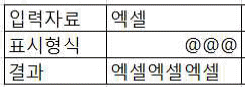
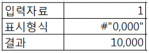
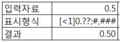
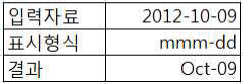
(정답률: 69%)
22. 다음 중 그림과 같이 [A1] 셀에 10을 입력하고 [A3] 셀까지 자동 채우기 한 후 나타나는 [자동 채우기] 옵션에 대한 설명으로 옳지 않은 것은?
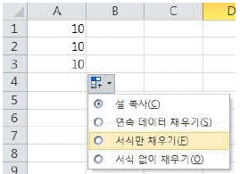
- 셀 복사: [A1] 셀의 값 10이 [A2] 셀과 [A3] 셀에 복사되고, [A1] 셀의 서식은 복사되지 않는다.
- 연속 데이터 채우기: [A1] 셀의 서식과 함께 [A2] 셀에는 값 11, [A3] 셀에는 값 12가 입력된다.
- 서식만 채우기: [A2] 셀과 [A3] 셀에 [A1] 셀의 서식만 복사되고 값은 입력되지 않는다.
- 서식 없이 채우기: [A2] 셀과 [A3] 셀에 [A1] 셀의 서식은 복사되지 않고 [A1] 셀의 값 10이 입력된다.
(정답률: 66%)
23. 다음 중 피벗 차트 보고서에 대한 설명으로 옳지 않은 것은?
- 피벗 차트 보고서에 필터를 적용하면 피벗 테이블 보고서에 자동 적용된다.
- 처음 피벗 테이블 보고서를 만들 때 자동으로 피벗 차트 보고서를 함께 만들 수도 있고, 기존 피벗 테이블 보고서에서 피벗 차트 보고서를 만들 수도 있다.
- 피벗 차트 보고서를 정적 차트로 변환하려면 관련된 피벗 테이블 보고서를 선택한 후 [옵션] 탭 [동작] 그룹의 [모두 지우기] 명령을 수행하여 피벗 테이블 보고서를 먼저 삭제한다.
- 피벗 차트 보고서를 삭제해도 관련된 피벗 테이블 보고서는 삭제되지 않는다.
(정답률: 50%)
24. 아래는 연이율 6%의 대출금 5,000,000원을 36개월, 60개월, 24개월로 상환 시 월상환액에 따른 시나리오 요약 보고서를 작성한 것이다. 다음 중 이에 관한 설명으로 옳지 않은 것은?
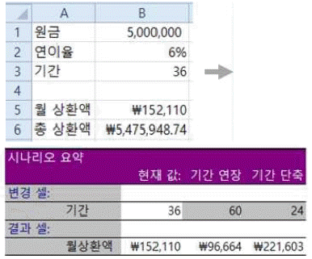
- 시나리오 추가 시 사용된 [변경 셀]은 [B3] 셀이다.
- [B3] 셀은 ‘기간’으로 [B5] 셀은 ‘월상환액’으로 이름이 정의되어 있다.
- 일반적으로 시나리오를 만들 때 [변경 셀]에는 사용자가 값을 입력할 수는 있으나 여러 개의 셀을 참조할 수는 없다.
- [B5] 셀은 시나리오 요약 시 [결과 셀]로 사용되었으며, 수식이 포함되어 있다.
(정답률: 77%)
25. 다음 중 Access 외부 데이터를 Excel로 가져와 사용하는 방법에 대한 설명으로 옳지 않은 것은?
- 현재 통합 문서에 표, 피벗 테이블 보고서, 피벗 차트 및 피벗 테이블 보고서 중 선택하여 가져올 수 있다.
- [데이터 가져오기] 대화상자에서 데이터가 들어갈 위치는 새 워크시트의 [A1] 셀이 기본으로 선택된다.
- 파일을 열거나 다른 작업을 하면서, 또는 일정한 간격으로 데이터에 대한 새로 고침을 실행할 수 있다.
- [통합 문서 연결] 대화 상자에 열로 표시되는 연결 이름과 설명을 변경할 수 있다.
(정답률: 49%)
26. 다음 중 아래 워크시트 (가)를 (나)와 같이 정렬하기 위한 방법으로 옳은 것은?
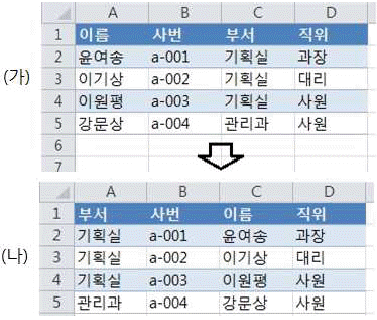
- 정렬 옵션을 ‘왼쪽에서 오른쪽’으로 설정
- 정렬 옵션을 ‘위쪽에서 아래쪽’으로 설정
- 정렬 기준을 ‘셀 색’, 정렬을 ‘위에 표시’로 설정
- 정렬 기준을 ‘셀 색’, 정렬을 ‘아래쪽에 표시’로 설정
(정답률: 75%)
27. 다음 중 차트에서 3차원 막대그래프에 적용할 수 없는 기능은?
- 상하 회전
- 원근감 조절
- 추세선
- 데이터 표 표시
(정답률: 76%)
28. 다음 중 엑셀의 데이터 입력에 대한 설명으로 옳지 않은 것은?
- 한 셀에 여러 줄의 데이터를 입력하려면 <Alt>＋<Enter> 키를 사용한다.
- 셀에 데이터를 입력하고 <Shift>＋<Enter>키를 누르면 셀 입력이 완료되고 바로 아래의 셀이 선택된다.
- 같은 데이터를 여러 셀에 한 번에 입력하려면 <Ctrl>＋<Enter>키를 사용한다.
- 수식이 들어 있는 셀을 선택하고 채우기 핸들을 두 번 클릭하면 수식이 적용되는 모든 인접한 셀에 대해 아래쪽으로 수식을 자동 입력할 수 있다.
(정답률: 66%)
29. 아래의 프로시저를 이용하여 [A1:C3] 영역의 서식만 지우려고 한다. 다음 중 괄호 안에 들어갈 코드로 옳은 것은?
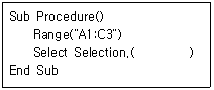
- DeleteFormats
- FreeFormats
- ClearFormats
- DeactivateFormats
(정답률: 64%)
30. 다음 중 [찾기 및 바꾸기] 대화상자에 대한 설명으로 옳지 않은 것은?
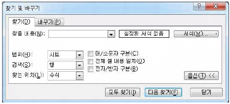
- 문서에서 ‘찾을 내용’에 입력한 내용과 일치하는 이전 항목을 찾으려면 <Shift>키를 누른 상태에서 [다음 찾기] 단추를 클릭한다.
- ‘찾을 내용’에 입력한 문자만 있는 셀을 검색하려면 ‘전체 셀 내용 일치’를 선택한다.
- 별표(*), 물음표(?) 및 물결표(~) 등의 문자가 포함된 내용을 찾으려면 ‘찾을 내용’에 작은따옴표(') 뒤에 해당 문자를 붙여 입력한다.
- 찾을 내용을 워크시트에서 검색할지 전체 통합 문서 에서 검색할지 등을 선택하려면 ‘범위’에서 ‘시트’ 또는 ‘통합 문서’를 선택한다.
(정답률: 71%)
31. 다음 중 매크로 편집에 사용되는 Visual Basic Editor에 관한 설명으로 옳지 않은 것은?
- Visual Basic Editor는 단축키 <Alt>＋<F11>키를 누르면 실행된다.
- 작성된 매크로는 한 번에 실행되며, 한 단계씩 실행될 수는 없다.
- Visual Basic Editor는 프로젝트 탐색기, 속성 창, 모듈 시트 등으로 구성되어 있다.
- 실행하고자 하는 매크로 구문 내에 커서를 위치시키고 <F5>키를 누르면 매크로가 바로 실행된다.
(정답률: 72%)
32. 다음 중 아래 시트에서 각 수식을 실행했을 때의 결과 값으로 옳은 것은?
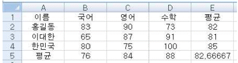
- =SUM(COUNTA(B2:D4), MAXA(B2:D4)) → 102
- =AVERAGE(SMALL(C2:C4, 2), LARGE(C2:C4, 2)) → 75
- =SUM(LARGE(B3:D3, 2), SMALL(B3:D3, 2)) → 174
- =SUM(COUNTA(B2,D4), MINA(B2,D4)) → 109
(정답률: 70%)
33. 다음 중 아래 시트에서 각 수식을 실행했을 때의 결과 값으로 옳지 않은 것은?
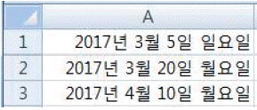
- EOMONTH(A1,-3) → 2016-12-⑤
- DAYS360(A1,A3) → 35
- NETWORKDAYS(A1,A2) → 11
- WORKDAY(A1,10) → 2017-03-17
(정답률: 60%)
34. 다음 중 통합 문서 공유에 대한 설명으로 옳지 않은 것은?
- 병합된 셀, 조건부 서식, 데이터 유효성 검사, 차트, 그림과 같은 일부 기능은 공유 통합 문서에서 추가 하거나 변경할 수 없다.
- 공유된 통합 문서는 여러 사용자가 동시에 변경할 수 없다.
- 통합 문서를 공유하는 경우 저장 위치는 웹 서버가 아니라 공유 네트워크 폴더를 사용해야 한다.
- 셀을 잠그고 워크시트를 보호하여 액세스를 제한하지 않으면 네트워크 공유에 액세스할 수 있는 모든 사용자가 공유 통합 문서에 대한 모든 액세스 권한을 갖게 된다.
(정답률: 64%)
35. 아래 그림과 같이 워크시트에 배열상수 형태로 배열 수식이 입력되어 있을 때, [A5] 셀에서 수식 =SUM(A1, B2)를 실행하였다. 다음 중 그 결과로 옳은 것은?
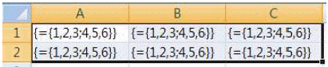
- 3
- 6
- 7
- 8
(정답률: 67%)
36. 다음 중 엑셀의 확장자에 따른 파일 형식과 설명이 옳지 않은 것은?
- .xlsb - Excel 2007 바이너리 파일 형식이다.
- .xlsm - XML 기반의 Excel 2007 파일 형식으로 매크로를 포함할 수 있다.
- .xlsx - XML 기반의 기본 Excel 2007 파일 형식으로 VBA 매크로 코드나 Excel 4.0 매크로 시트를 저장할 수 없다.
- .xltx - Excel 서식파일의 기본 Excel 2007 파일형식 으로 VBA 매크로 코드나 Excel 4.0 매크로 시트를 저장할 수 있다.
(정답률: 54%)
37. 다음 중 엑셀의 [페이지 설정] 대화상자에 대한 설명으로 옳은 것은?
- 인쇄 배율을 수동으로 설정할 수 있으며, 배율은 워크시트 표준 크기의 10%에서 200%까지 설정 가능하다.
- [시트] 탭에서 머리글/바닥글과 행/열 머리글이 인쇄 되도록 설정할 수 있다.
- [페이지] 탭에서 ‘자동 맞춤’의 용지 너비와 용지 높이를 각각 1로 지정하면 여러 페이지가 한 페이지에 인쇄된다.
- 셀에 설정된 메모는 시트에 표시된 대로 인쇄할 수는 없으나 시트 끝에 인쇄되도록 설정할 수 있다.
(정답률: 56%)
38. 다음 중 [페이지 나누기 미리 보기] 상태에서 설정할 수 있는 기능에 대한 설명으로 옳지 않은 것은?
- 행 높이와 열 너비를 변경하면 자동 페이지 나누기의 위치도 변경된다.
- 수동으로 삽입한 페이지 나누기를 제거하려면 페이지 나누기를 페이지 나누기 미리 보기 영역 밖으로 끌어다 놓는다.
- [페이지 나누기 삽입] 기능은 선택한 셀의 아래쪽 행 오른쪽 열로 페이지 나누기를 삽입한다.
- 수동 페이지 나누기를 모두 제거하려면 임의의 셀의 바로 가기 메뉴에서 [페이지 나누기 모두 원래대로]를 클릭한다.
(정답률: 52%)
39. 다음 중 수식에서 발생하는 각 오류에 대한 원인으로 옳지 않은 것은?
- #NULL! - 배열 수식이 들어 있는 범위와 행 또는 열수가 같지 않은 배열 수식의 인수를 사용하는 경우
- #VALUE! - 수식에서 잘못된 인수나 피연산자를 사용한 경우
- #NUM! - 수식이나 함수에 잘못된 숫자 값이 포함된 경우
- #NAME? - 수식에서 이름으로 정의되지 않은 텍스트를 큰따옴표로 묶지 않고 입력한 경우
(정답률: 67%)
40. 다음 중 아래에서 설명하는 차트의 종류로 가장 적절한 것은?
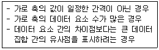
- 주식형 차트
- 분산형 차트
- 영역형 차트
- 방사형 차트
(정답률: 63%)
3과목: 데이터베이스 일반
41. 다음 중 아래의 이벤트 프로시저에서 [Command1] 단추를 클릭했을 때의 실행 결과로 옳은 것은?
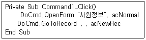
- [사원정보] 테이블이 열리고, 가장 마지막 행의 새 레코드에 포커스가 표시된다.
- [사원정보] 폼이 열리고, 첫 번째 레코드의 가장 왼쪽 컨트롤에 포커스가 표시된다.
- [사원정보] 폼이 열리고, 마지막 레코드의 가장 왼쪽 컨트롤에 포커스가 표시된다.
- [사원정보] 폼이 열리고, 새 레코드를 입력할 수 있도록 비워진 폼이 표시된다.
(정답률: 79%)
42. 다음 중 VBA 모듈에서 선택 쿼리를 데이터시트 보기, 디자인 보기, 인쇄 미리 보기 등으로 열기 위해 사용하는 메서드는?
- Docmd.RunSQL
- DoCmd.OpenQuery
- DoCmd.RunQuery
- Docmd.OpenSQL
(정답률: 79%)
43. 다음 중 보고서의 각 구역에 대한 설명으로 옳지 않은 것은?
- 보고서 머리글: 보고서의 맨 앞에 한 번 출력되며, 일반적으로 로고나 제목 및 날짜 등의 정보를 표시할 때 사용한다.
- 페이지 바닥글: 각 레코드 그룹의 맨 끝에 출력되며, 그룹에 대한 요약 정보를 표시할 때 사용한다.
- 본문: 레코드 원본의 모든 행에 대해 한 번씩 출력되며, 보고서의 본문을 구성하는 컨트롤이 여기에 추가된다.
- 보고서 바닥글: 보고서 총합계 또는 전체 보고서에 대한 기타 요약 정보를 표시할 때 사용한다.
(정답률: 67%)
44. 다음 중 정규화에 대한 설명으로 옳지 않은 것은?
- 정규화를 통해 삽입, 삭제, 갱신 이상의 발생을 방지할 수 있다.
- 정규화를 통해 데이터 삽입 시 테이블 재구성의 필요성을 줄일 수 있다.
- 정규화는 테이블 속성들 사이의 종속성을 최대한 배제 하는 과정으로 볼 수 있다.
- 정규화를 수행하여 데이터의 중복을 완전히 제거할 수 있다.
(정답률: 75%)
45. 다음 중 기본 키(Primary Key)에 대한 설명으로 옳지 않은 것은?
- 기본 키로 지정된 필드는 다른 레코드와 동일한 값을 가질 수 없다.
- 기본 키 필드에 값이 입력되지 않으면 레코드가 저장 되지 않는다.
- 기본 키가 설정되지 않아도 테이블은 생성된다.
- 기본 키는 하나의 필드에만 설정할 수 있다.
(정답률: 72%)
46. 다음 중 폼이나 보고서에서 테이블이나 쿼리의 필드를 컨트롤 원본으로 사용하는 컨트롤을 의미하는 것은?
- 언바운드 컨트롤
- 바운드 컨트롤
- 계산 컨트롤
- 레이블 컨트롤
(정답률: 61%)
47. 다음 중 [업무 문서 양식 마법사]를 이용한 보고서 작성에 대한 설명으로 옳지 않은 것은?
- 테이블을 이용하여 세금계산서를 작성할 수 있다.
- 테이블을 이용하여 거래명세서를 작성할 수 있다.
- 쿼리를 이용하여 우편물 레이블을 작성할 수 있다.
- 쿼리를 이용하여 서식이 없는 세금계산서를 작성할 수 있다.
(정답률: 62%)
48. 다음 중 보고서의 [그룹, 정렬 및 요약] 창의 그룹 설정에 대한 설명으로 옳은 것을 모두 나열한 것은?
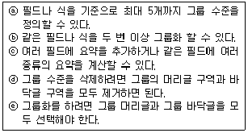
- ⓐ, ⓓ
- ⓐ, ⓓ, ⓔ
- ⓑ, ⓒ
- ⓑ, ⓒ, ⓔ
(정답률: 65%)
49. 다음 중 폼과 보고서에서 설정 가능한 [조건부 서식]에 대한 설명으로 옳지 않은 것은?
- 원하는 필드 값에 대한 서식을 지정할 수 있다.
- 식이 TRUE 또는 FALSE로 평가되는 경우에 대한 서식을 지정할 수 있다.
- 필드에 포커스가 있는지 여부에 따라 서식을 지정할 수도 있다.
- 조건에 맞지 않는 경우의 서식은 조건을 식으로만 지정할 수 있다.
(정답률: 68%)
50. 다음 중 [폼 마법사]를 이용한 폼 작성 시 선택 가능한 폼의 모양 중 각 필드가 왼쪽의 레이블과 함께 각 행에 표시되고 컨트롤 레이아웃이 자동으로 설정되는 것은?
- 컬럼 형식
- 테이블 형식
- 데이터시트
- 맞춤
(정답률: 43%)
51. 다음 중 아래 그림과 같은 결과를 표시하는 쿼리로 옳은 것은?(오피스 2007 기준 문제입니다. 오피스 2010에 관련된 내용은 해설을 참고하세요.)
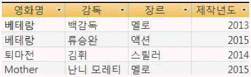
- SELECT * FROM movie ORDER BY 영화명, 장르;
- SELECT * FROM movie ORDER BY 영화명 DESC, 장르 DESC;
- SELECT * FROM movie ORDER BY 제작년도, 장르 DESC;
- SELECT * FROM movie ORDER BY 감독, 제작년도;
(정답률: 55%)
52. 다음 중 아래 <PERSON> 테이블에 대한 쿼리의 실행 결과 값은?
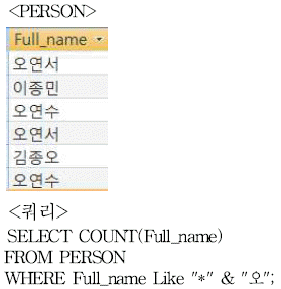
- 1
- 2
- 4
- 5
(정답률: 60%)
53. 다음 중 사원 테이블에서 호봉이 6인 사원의 연봉을 3% 인상된 값으로 수정하는 실행 쿼리를 작성하고자할 때, 아래의 각 괄호에 넣어야 할 구문을 순서대로 나열한 것은?
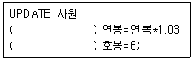
- FROM, WHERE
- SET, WHERE
- VALUE, SELECT
- INTO, VALUE
(정답률: 70%)
54. 다음 중 입사일이 '1990-03-02'인 사원의 현재까지 근무한 년 수를 출력하기 위한 SQL 문으로 옳은 것은?
- select datediff("yyyy", '1990-03-02', date());
- select dateadd("yyyy", date(), '1990-03-02');
- select datevalue("yy", '1990-03-02', date());
- select datediff("yy", '1990-03-02', date());
(정답률: 56%)
55. 다음 중 제공된 항목에서만 값을 선택할 수 있으며 직접 입력할 수는 없는 컨트롤은?
- 텍스트 상자
- 레이블
- 콤보 상자
- 목록 상자
(정답률: 54%)
56. 다음 중 테이블의 필드 값을 손쉽게 요약 분석하여 통계적인 값을 그래프로 보여주는 개체는?
- 폼
- 폼 분할
- 피벗 차트
- 기타 폼 – 데이터시트
(정답률: 72%)
57. 다음 중 입력 마스크를 ‘>L0L L?0’로 지정했을 때 유효한 입력 값은?
- a9b M
- M3F A07
- H3H 가H3
- 9Z3 3?H
(정답률: 59%)
58. 아래 그림과 같이 <주문내역> 테이블과 <제품> 테이블의 관계가 설정되어 있다. 다음 중 <제품> 테이블의 특정 레코드를 삭제하였을 경우에 대한 설명으로 옳은 것은?
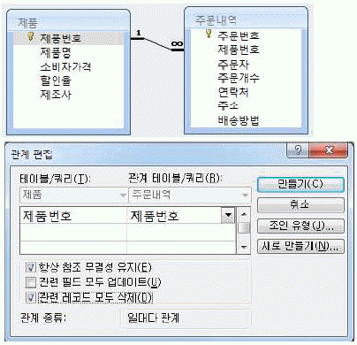
- <주문내역> 테이블에서 참조되고 있으므로 <제품> 테이블에서 특정 레코드를 삭제할 수 없다.
- <제품> 테이블에서만 특정 레코드가 삭제되고, <주문 내역> 테이블에는 아무런 변동이 없다.
- <제품> 테이블의 특정 레코드가 삭제되고, 이를 참조하는 <주문내역> 테이블의 모든 레코드도 함께 삭제된다.
- <제품> 테이블의 특정 레코드와 <주문내역> 테이블의 모든 레코드가 삭제된다.
(정답률: 62%)
59. 다음 중 아래와 같이 필드 속성을 설정한 경우 입력 값에 따른 결과가 옳지 않은 것은?
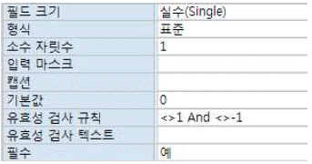
- ‘1’을 입력하는 경우 값이 입력되지 않는다.
- ‘-1’을 입력하는 경우 값이 입력되지 않는다.
- 필드 값을 입력하지 않는 경우 기본 값으로 ‘0.0이 입력된다.
- ‘1234’를 입력하는 경우 표시 되는 값은 ‘1234.0’이 된다.
(정답률: 55%)
60. 다음 중 아래와 같은 <학생> 테이블에서 필드의 순서를 변경하기 위한 방법으로 옳지 않은 것은?
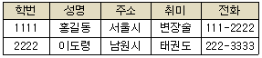
- 디자인 보기에서 <주소> 필드를 선택한 후 이동할 위치로 끌어다 놓는다.
- 디자인 보기에서 <주소> 필드를 선택한 후 <Shift>키를 누른 상태에서 <전화> 필드를 선택하여 이동할 위치로 끌어다 놓으면 <주소,취미,전화> 필드가 이동된다.
- 데이터시트 보기에서 <전화> 필드를 선택한 후 이동할 위치로 끌어다 놓는다.
- 데이터시트 보기에서 <주소> 필드명을 선택한 후 <Ctrl> 키를 누른 상태에서 <전화> 필드를 선택하여 이동할 위치로 끌어다 놓으면 <주소,전화> 필드만 이동된다.
(정답률: 48%)